P2
Outline
- Learning-based Character Animation (cont.)
- Motion Models
- Autoregressive models: PFNN
- Generative models
P4
Learning Motion Models
问题的数学建模
\(p(x)\): probability that 𝒙 is a natural motion
由于 \(p(x)\) 无法由计算得出，所以从数据去学。数据即 a set of example motions {\(x_i\)}∼ \(p(x)\)
P5
数学模型1
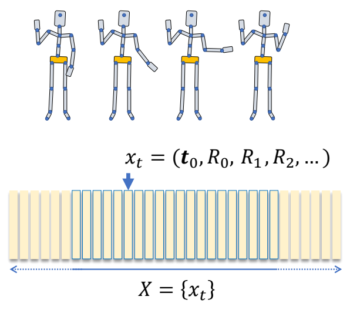
✅ 一个pose可以用每个关节的位置表示，也可以用每个关节的旋转表示。如果用位置约束，最后需要通过IK变成旋转的约束。如果用旋转约束，就难以做到需要约束位置的效果。
✅ P(X)判断整个序列所有pose的联合分布是否合理。
P7
数学模型2
$$ p(X\mid z)=p(x_1,\dots ,x_T\mid z) $$
$$ \begin{align*} 𝑧: & \text{ control parameters} \\ & \text{ latent variables} \\ & …… \end{align*} $$
✅ 对动作序列的要求，除了动作合理，还要符合用户期待，用户要求可以是显式的，例如往左走；也可以是隐式的，例如以老人的风格走。\(z\) 代表用户条件。
✅ P(X|z)判断在条件z下整个序列所有pose的联合分布是否合理。
P8
$$ (x_1,\dots ,x_T)=f(z) $$
$$ \begin{align*} 𝑧: & \text{ control parameters} \\ & \text{ latent variables} \\ & …… \end{align*} $$
✅ 如果概率分布是正确的，基于这个分布采样能得到一个合理的动作，且满足前提条件。
P14
数学模型3
$$ p(X\mid z)=p(x_1,\dots ,x_T\mid z) $$
$$ =p(x_1)\prod_{t}^{} p(x_t\mid x_{t-1},\dots ,x_1;z) $$
\(^\ast \) The chain rule of conditional probabilities:
$$ \begin{align*} p(x_1,x_2,x_3) & = p(x_2,x_3 \mid x_1)p(x_1) \\ & = p(x_3 \mid x_2, x_1)p( x_2 \mid x_1)p(x_1) \end{align*} $$
✅ 序列合理 ＝ 已知序列中的前 \(t-1\) 帧时第 \(t\) 帧应当合理。
P15
采样过程为：
$$ x_t=f(x_{t-1},x_{t-2},\dots x_1;z) $$
P17
数学模型4
✅ 假设动作具有Markov 性（无记忆性）
$$ x_t=f(x_{t-1};z) $$
Markov Property
✅ \(x_t\) 只受 \(x_{t-1}\) 影响，与 \(t-1\) 之前的动作无关。
P18
Two Perspectives on a Motion Sequence
| 数学模型3 | 数学模型4 |
|---|---|
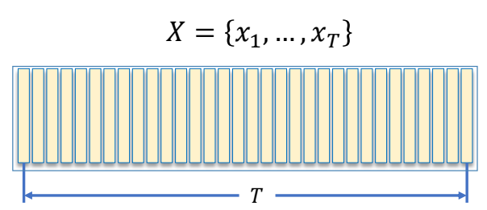 | 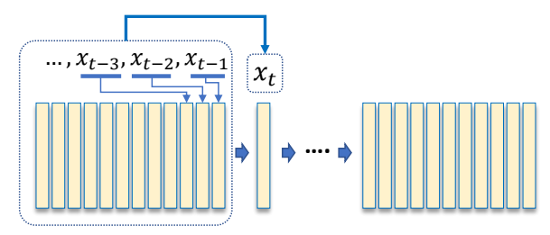 |
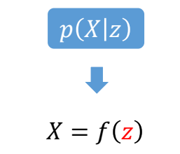 | 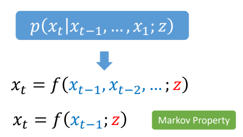 |
| ✅ 无交互无实时通常用前者 | ✅ 游戏里面通常用后者 |
| ✅ 左：直接生成所有动作。 | ✅ 右：一帧一帧地生成。 |
| ✅ 右无法考虑未来，不能根据将要发生的事情调整当前的动作。（自回归） |
P25
数学模型
$$ x_t=f(x_{t-1}) $$
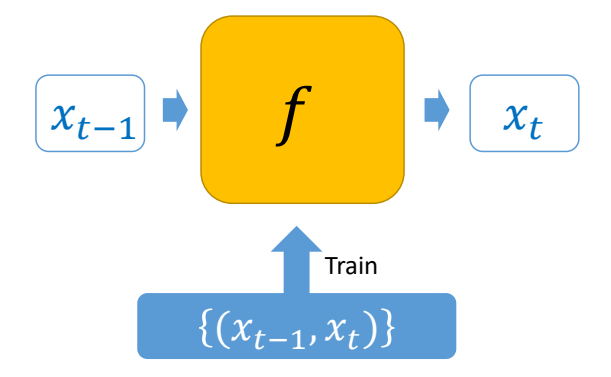
✅ 由于只和上一帧相关，二元组 \(（x_{t-1}，x_t）\) 构成了一个数据，希望从里面学到一些信息。
✅ Neural Network 相关部分跳过。
✅ 当前先不考虑 \(z\)
✅ 可以把它当作优化问题来解。
P40
Ambiguity Issue
$$ x_t=f(x_{t-1}) $$
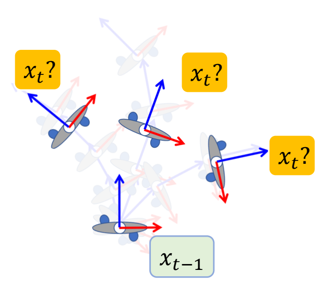
✅ 但是 \(x_t\) 和 \(x_{t-1}\) 的关系是有歧义性的，最后学到一个平均的 \(x_t\).
✅ 因为\(x_{t-1}\)与\(x_t\)不是一对一的mapping关系。
P41
Hidden Variables
$$ x_t=f(x_{t-1};z) $$
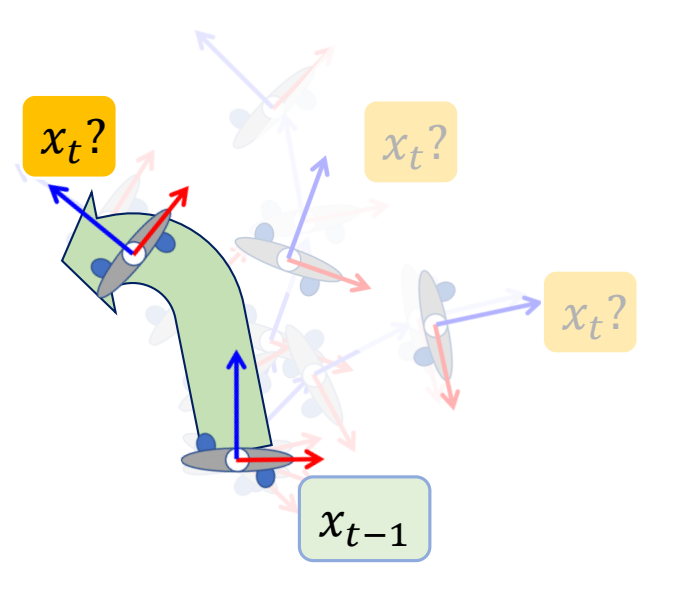
✅ 需要加入一个额外的变量，可以来自用户输入或先验信息。关键是怎么找到 \(z\)，使学习比较有效。
| ID | Year | Name | Note | Tags | Link |
|---|---|---|---|---|---|
| 113 | 2017 | Phasefunctioned neural networks for character control | PFNN | link |
P55
相关工作
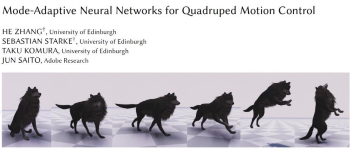 | *SIGGRAPH 2018 ✅ 论文一：除角色姿态，还考虑脚的速度。 |
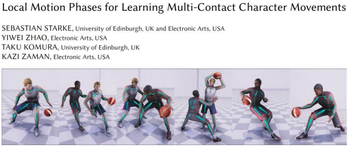 | *SIGGRAPH 2020 ✅ 论文二：把两个脚拆开，并考虑手，分别定义相位函数。 |
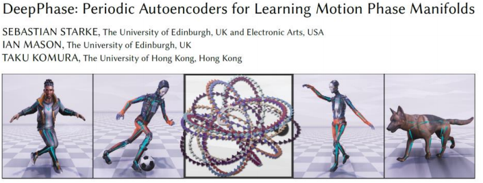 | *SIGGRAPH 2022 ✅ 论文三：从数据中自动学到相位函数的组合。 |
P57
Generative Models
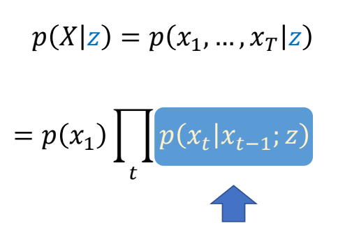
✅ 不学两帧关系，而是直接学概率密度函数。
✅ 难点：(1) 真实 PDF 可能非常复杂 (2) 从一个 PDF 中采样也很难。
✅ PDF 的作用是判断动作是不是真的。
P60
常见套路
| Generative Models | ✅ 一般生成式模型是这样的形式：从一个简单的 PDF，通过 \(f(z)\)，映射到 \(p(x)\). ✅ 关键是 \(f(z)\) 要学好。 | 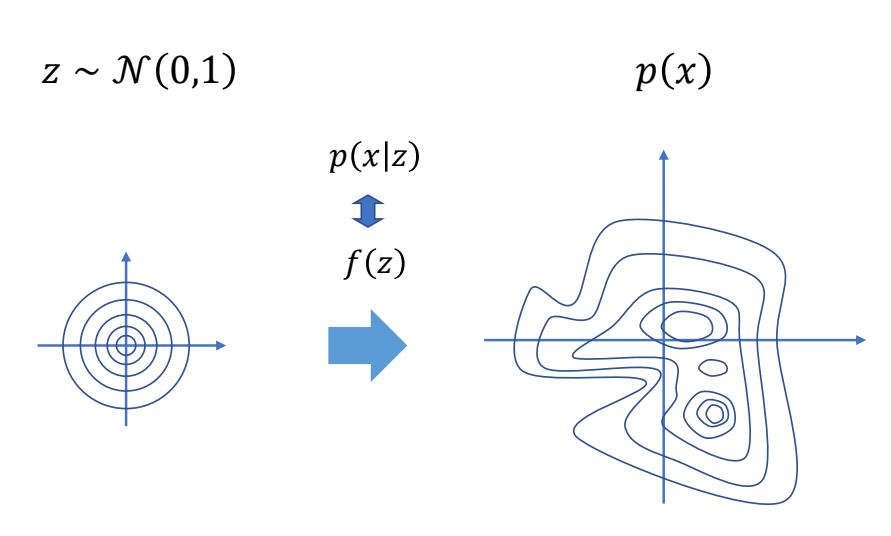 |
| Variational Autoencoders | ✅ VAE：已知一些真实数据采样，用 Encoder 编码到简单分布上的点，再用Decoder 变回原分布上的点。 ✅ control VAE 是 VAE＋控制＋物理仿真 | 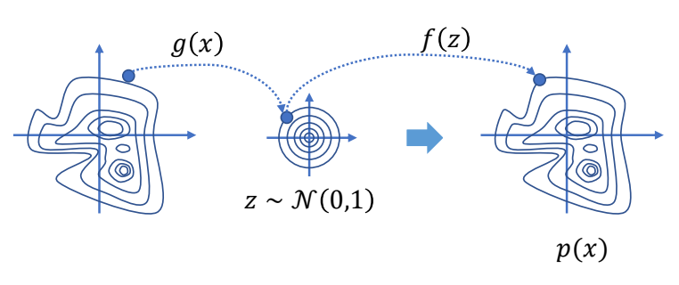 |
| Generative Adversarial Network | ✅ GAN：无 Encoder，增加一个判别器。 ✅ ASE、AMP 是 GAN 的控制版本。 ✅ RL 不结合物理难以 work，因为难以定义 reward. | 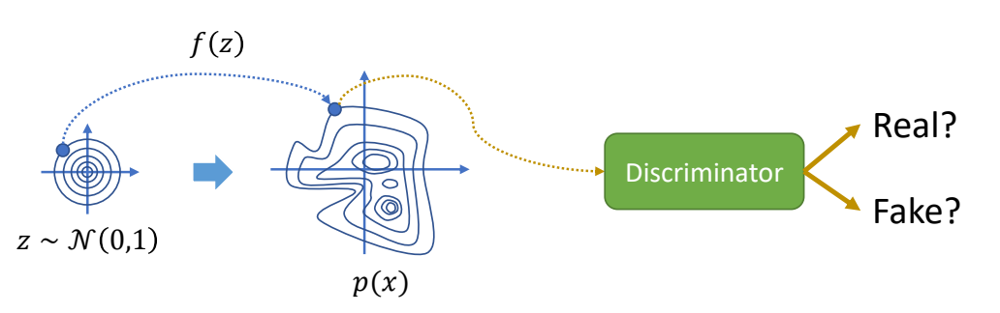 |
| Normalizing Flows | ✅ 标准化流：类似 VAE，使用一个可逆函数。 | 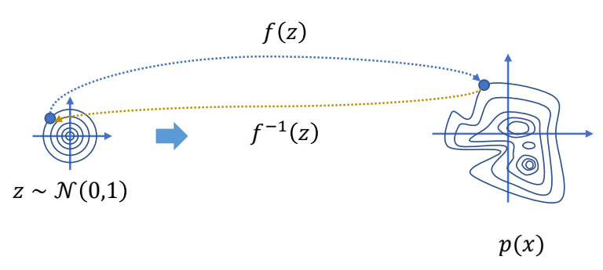 |
| Diffusion Models | ✅ 扩散模型：多次编码与解码。 ✅ 一个动作序列相当于隐空间里的一条轨迹。 | 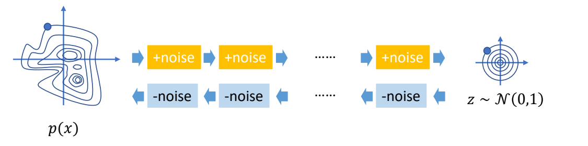 |
P62
相关工作
见https://caterpillarstudygroup.github.io/ImportantArticles/index.html
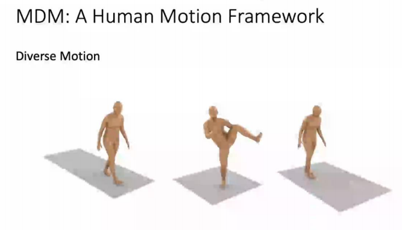 | [Tevet et al. 2022, arXiv, MDM: Human Motion Diffusion Model] |
本文出自CaterpillarStudyGroup，转载请注明出处。
https://caterpillarstudygroup.github.io/GAMES105_mdbook/